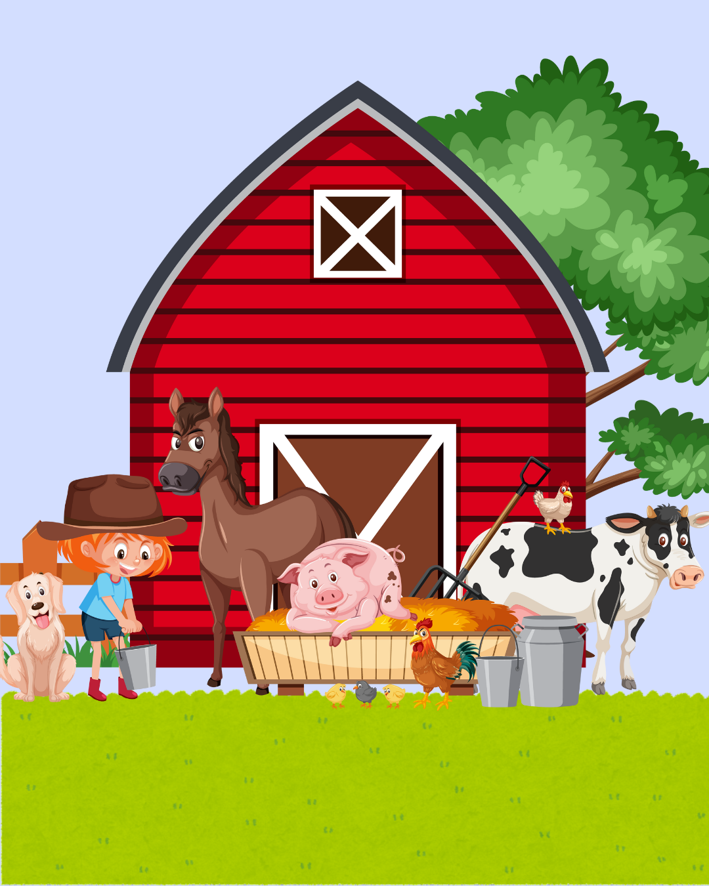
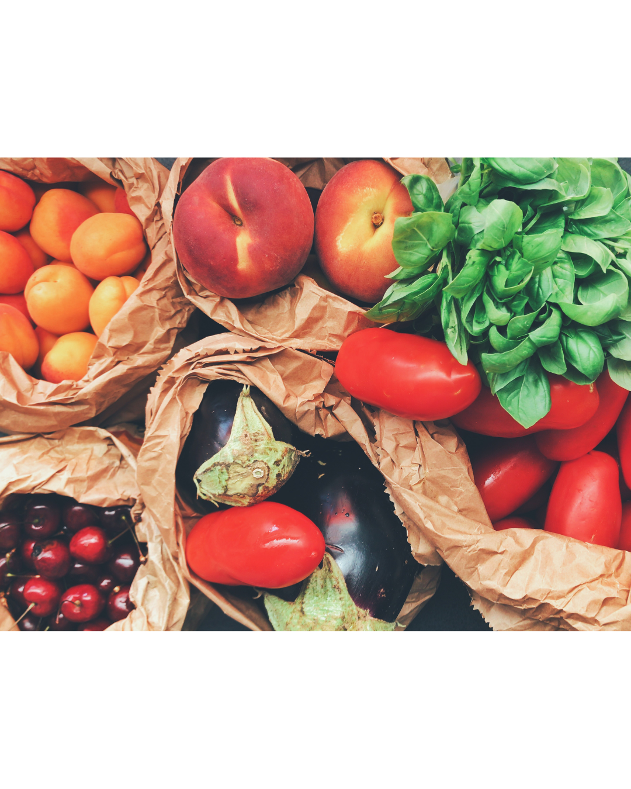
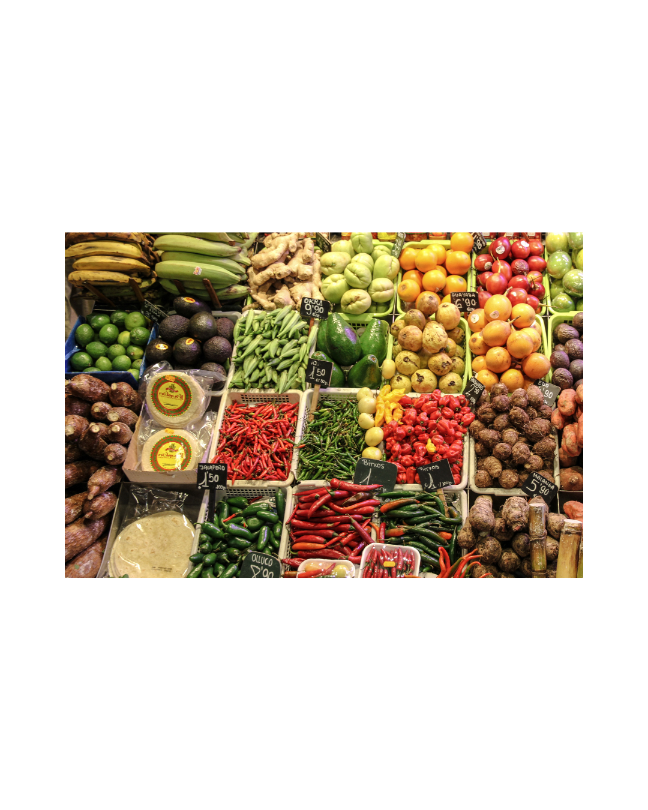

A maioria do nosso alimento vem de fazendas e plantações, onde agricultores cultivam frutas, verduras, grãos e outros alimentos. A agricultura familiar, em particular, desempenha um papel crucial, sendo responsável por cerca de 70% dos alimentos que chegam às casas brasileiras, como feijão, arroz, milho, leite, batata e mandioca.

A comida chega à cidade através de uma rede complexa de produção, transporte e distribuição.Após a produção, os alimentos são armazenados e processados, e depois distribuídos para supermercados, feiras e outros locais de venda.
É necessário tomar diversos cuidados, tendo em vista que cada alimento tem uma forma de ser manuseado para que ele consiga manter a sua qualidade por mais tempo. Alguns fatores como a cautela com a embalagem, o acondicionamento, o clima e o transporte, também estão diretamente associados.
